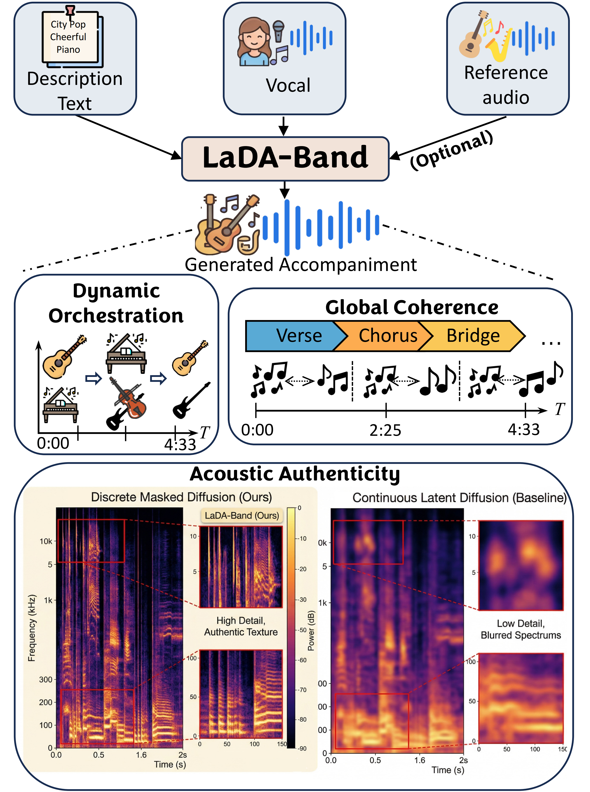

Dynamic Orchestration
Generates accompaniment that can shift instrumentation, density, and energy across a song instead of repeating a static backing.
This work is accepted by ACMMM 26.
A zero-shot vocal-to-accompaniment system that generates full-song arrangements from vocal and text inputs, with dynamic orchestration, global coherence, and acoustic authenticity at song scale.
Method focus
The demo set highlights how accompaniment should sound natural, stay aligned with the vocal throughout the entire song, and change instrumentation and energy across sections like a real arrangement.
Generates accompaniment that can shift instrumentation, density, and energy across a song instead of repeating a static backing.
Preserves long-range structure across verse, chorus, bridge, and transitions so the arrangement does not drift from the vocal.
Targets detailed, natural instrumental texture instead of blurred or over-smoothed spectrums in the generated accompaniment.
System overview
This project page accompanies the LaDA-Band research release. The repository provides interactive audio demonstrations and the public implementation; model access follows the gated research-use terms.

LaDA-Band conditions on vocal and text prompts, with optional reference audio for additional arrangement guidance.
The model generates full-song accompaniment intended to match the vocal line, style description, and evolving section-level musical structure.
Selected IHP, Suno70K, and ablation examples compare LaDA-Band with ACE-Step, SongEcho, and ablation variants.
Full-song comparisons
Every audio player streams the matching file from the public Duoluoluos/LaDA-Band repository at a pinned revision, while this page remains a static GitHub Pages site with no backend or external player embeds. Audio loads on demand when playback begins.
Showing all demo groups.
A lively pop track with a catchy melody and upbeat rhythm, featuring electric guitars and synthesizers. This track has an upbeat, energetic, optimistic mood.
A soulful track with smooth vocals and a groovy rhythm, evoking a sense of nostalgia and emotional depth.
A melodic indie rock track featuring a male vocalist, accompanied by a blend of piano, drums, and bass, creating a reflective and introspective mood.
A vibrant electronic track with pulsating synths and a catchy pop melody, creating an uplifting and energetic atmosphere.
Pop, female vocal, synth-pop, dreamy, soaring, euphoric, 103.508 bpm, C minor, synth textures, driving, atmospheric.
Country, male vocal, country rock, driving, atmospheric.
Rock, punk, hardcore, melodic hardcore, aggressive, driving, atmospheric, energetic, street punk, 100.0 bpm.
Pop, rock, indie-rock, synth-pop, electronic, dance, 8-bit, chip music, upbeat, positive, catchy, engaging, vivacious, melodic, harmonic, bouncy, bright, sunny, energetic, enthusiastic.
Pop, female vocal, dance, high energy, 123.987 bpm, synth-pop, driving, atmospheric.
Pop, female vocal, synth-pop, dreamy, feel-good, upbeat, bouncy, 105.3 bpm, C major.
Country, female vocal, storytelling, piano, guitar, fiddle, pedal steel, hopeful, heartbreak, country folk, country rock, classic country, honky-tonk.
Pop, female vocal, piano, emotional, sad, slow-tempo, C major.
Pop, folk, singer-songwriter, sad, slow-tempo, acoustic guitar, piano, strings, violin, viola, cello, double bass, harp, flute, clarinet, oboe, English vocals, 60.0 bpm.
A soulful pop ballad featuring a poignant piano melody and emotive female vocals, evoking feelings of heartache and longing. This track has an emotional, melancholic mood.